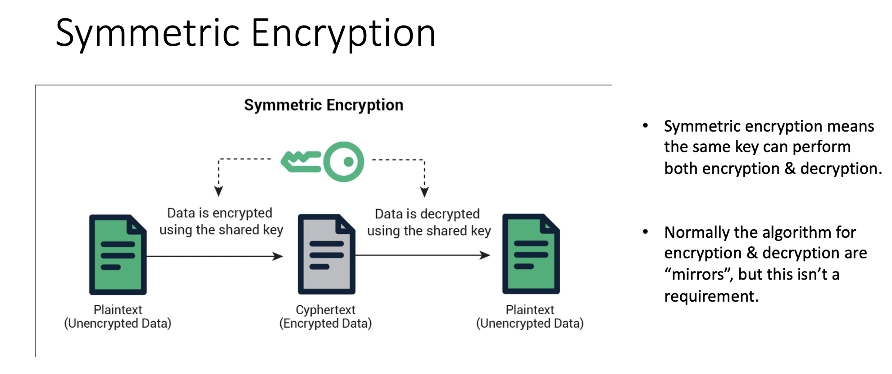
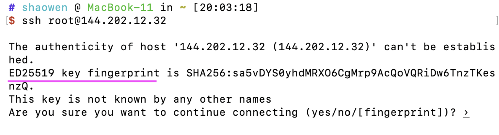

对称加密和非对称加密 - 课堂笔记
Contents
本篇从以前上课笔记搬过来的, 那时候用于复习, 查找资料的时候就没有加上引用, 很多信息没 reference,
1. Secret Key Cryptography
Secret key cryptography also known as symmetric cryptography.
- Very fast. So some use public key cryptography at the begining ( to transmit a temporary shared secret key ).

2. Public Key Cryptography
Also referred to as asymmetric cryptography.
- Public key cryptography tends to be slower than secret key cryptography but more easily configurable.
- Therefore, it is common to use the public key in the beginning of communication for authentication and to establish a temporary shared secret key. Then the secret key technology is used to encrypt the remainder of the conversation

注意加密解密都是用的收信者的key, 因此你想使用非对称加密给另一台机器发送加密数据, 你必须知道他的pubic key, 服务器给客户端发, 服务器需要知道客户端的public key, 反之亦然, 举例:
小明使用银行的公钥加密了“存5000元”的信息，发送给了银行，如果中间被黑客截取了，黑客没有私钥是没办法进行篡改和解密的，银行收到信息后用自己的私钥查看数据，然后将“操作成功/失败”的信息用小明的公钥进行加密发送给小明，小明收到信息用自己的私钥进行解密操作。
2.1. Public Key Algorithms
Public key algorithms differ in their functions and how they perform these functions:
-
RSA and ECC: do encryption and digital signatures
-
ElGamal and DSS: do digital signatures
-
Diffie-Hellman: allows establishment of a shared secret
-
Zero knowledge proof systems: does authentication only
ECC = Elliptic Curve Cryptography, a subdomain of cryptography involving various schemes (for signing, encryption, key agreement, …).
ECDSA = Elliptic Curve Digital Signature Algorithm, a specific cryptographic scheme consisting of three algorithms: one for key generation, one for creating signatures, one for verifying signatures. It is a variant of the older DSA algorithm, but using elliptic curve based techniques rather than multiplication-modulo-a-prime.
2.2. Applications of Public Key Cryptography
- Transmitting Over an Insecure Channel
- Secure Storage on Insecure Media
- Authentication
- Digital Signatures
这里需要注意, Authentication 和 Digital Signatures 是不同的, 远程服务器的 ssh 免密登录以及 GitHub 添加本机公钥都是属于非对称加密在 Authentication 上的应用.
3. Man-in-the-middle attack
SSH 登录过程中采用的非对称的加密方式, 这里会有一个问题, 如果有人截取了登录请求, 冒充主机, 将自己伪造的公钥给到用户, 用户可能分不清楚了一般有两种处理方式, 分别是: 公钥指纹和上传公钥 (免密登陆)
3.1. 公钥指纹
“公钥指纹” 是指对公钥进行MD5计算, 或者使用其它 hash 函数, 第一次使用 ssh 连接服务器时, 就会提醒我们比对公钥指纹, 以防止中间人攻击:

ED25519 是一种 Digital Signature 算法. 注意DS算法只能用于验证身份, 并不能用于加密:
DSA stands for “Digital Signature Algorithm” - and is specifically designed to produce digital signatures, not perform encryption. https://crypto.stackexchange.com/a/2586
关于ED25519以及SSH相关的不在这赘述, 感兴趣到另一篇博客有介绍: 通过 SSH 实现免密登陆以及分析 SSH 如何验证真实性
3.2. 上传公钥
“上传公钥”的方式其实我们操作过，github上，我们就经常会这么做，把自己的公钥复制到仓库中，这样登录就不再需要输入密码了, 具体原理和方法请参考: 通过 SSH 实现免密登陆以及分析 SSH 如何验证真实性
4. Authentication 过程
- Alice can use public key cryptography to verifying Bob’s identity if Alice knows Bob’s public key.
- Alice chooses a random number
r, encrypts it using Bob’s public key, and sends the result to Bob. - Bob proves he knows
dBby decrypting the message and sendingrback to Alice. - The advantage of public key authentication is that Alice does not need to keep any secret information to verify Bob.
- So if Alice is a computer system, stealing the computer won’t compromise any secrets.
Author David
LastMod 2023-06-03